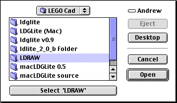
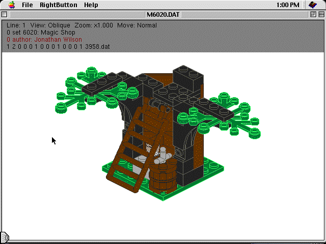

Start LdGLite by double clicking on it. The first time you run LdGLite
you will be asked to identify the LDRAW subdirectory, when you have highlighted
the directory, press the select button on the “Open dialog box” (see below).

Once the LDRAW subdirectory has been identified, then the program will prompt you to select and LDRAW file (normally ends with .dat). Select the LDRAW data file and the screen will then display the model you have selected.

Mac Screen in edit mode of an LDRAW model
(Note the program is in MacGLUT, which supplied the layout and it is very un-Mac like)
There are only 3 menus ‘Apple’, File and RightButton (see above), ‘Help’ is a standard button and not implemented
The about in ‘Apple’ will tell you about the GLUT implementation
The File Menu is restricted to Quit
The RightButton menu (also accessible as a contextual menu ‘Cntrl
+ click’) has all of the controls. The main menu consists of: File, View,
Options, Background Colour, Bitmap, Help and Quit.
File:
Open Displays Mac “Open File” dialog boxView:
Save As Displays Mac “Save as” dialog box
Editor Enter or leave Edit Mode for the Program
Lists a variety of view options for the Lego modelOptions:
Orthographic Displays the model without perspective distortionBackground Colour:
Perspective Displays perspective in the model, only works in wireframe mode
Shading Adds shadow effects to the model
Line Mode Toggles between a wireframe model and a solid view
Normal Reverts the display to solid view
Studs Draws the model without connection studs (faster rendering)
Visible Spin Should rotate the model Doesn’t work yet
Step-Continuos Rendering of the model doesn’t wait for user input
Parser Toggles between the L3parser and the LDLite parser
Zoom In Get closer to the model
Zoom Out Go away from the model
Scale up Make the model bigger
Scale down Make the model smaller
Change the background colourBitmap:
Saves the current model as a Bitmap ImageHelp:
Tells current version numberQuit:
Quit
Most of the controls have key equivalents.
This program is a Lego Cad program for the Macintosh. It is derived from LdGLite, which is in turn a platform independent version of LdLite (yes that was a tongue twister but it gets easier). LdGLite achieves platform independency by using the OpenGL graphics interface and the GLUT toolkit (techo stuff).
LdLite is an LDRAW file viewer for Windows. You can use it to view DAT and MPD files containing models made with everyone's favourite construction bricks.
LDRAW is a text only CAD program for DOS operation under Windows (now all of the history has been revealed).
LdGLite currently runs in Windows, Linux, and MacOS. LdGLite does not yet provide all of the functionality of LdLite. However it does have a few small goodies not yet available in LdLite.
Unfortunately LdGLite doesn’t compile easily for the MacOS and the resulting program is very un-Mac like in its operation (but it does work). Therefore LdGLite (Mac) is an attempt to create a user-friendlier version of LdGLite that will run under MacOS 8.6 9.2 (So far I have had very little success with the user friendly part).
For MacOS X users there is a compiled version of LdGLite on the LdGLite website. However, as yet I haven’t attempted to “carbonise” this source to make this program MacOS X compatible I firstly need to update the (Open / Close dialog boxes as a minimum).
To get from LdGLite to LdGLite (Mac), I have utilised LdGLite source code where necessary and it remains about 90% original. I have then supplied routines to interface more cleanly with the MacOS. So things such as the Mac dialog boxes for opening and saving files work, an ability to access the editor is available, Apple events are intercepted and actioned etc.
In conclusion, I must acknowledge (he / she doesn’t supply a name) for writing LdGLite (found at http://ldglite.sourceforge.net) without whom there would be no program at all. Secondly I’m also indebted to Erik Olson who converted LdGLite 0.5 to the original macLDG program. Without Eric I wouldn’t have attempted converting this version of LdGLite.
ATI graphics are necessary as the GLUT toolbox is not compatible with other graphics systems. Secondly MacOS 8.6 or higher is needed to run GLUT.
Additionally to run LdGLite (Mac) you will need LDRAW installed in a folder on your hard disk. LDRAW is available from www.ldraw.org along with installation instructions.
Setting up your System to run LdGLite (Mac)
Before running LdGLite (Mac) you will require that the LDRAW subdirectory is present on your hard-disk and complete with the following:
Subdirectory LDRAW
Within LDRAW there must be these 3 Subdirectories; PARTS, MODELS and P. (these directories contain the Lego parts database and primitives for drawing them).
Note it is vital that the spelling and capitalisation for the sub directories are exactly as above, as Parts is not equal to PARTS.
When you run LdGLite (Mac) for the first time, you will be asked to find the LDRAW subdirectory. Highlight your LDRAW subdirectory and press the button marked “Select LRDAW”.
This step will then allow LdGLite (Mac) to remember where the subdirectory is. (if you get this wrong, go to the preferences folder in the System folder, find the file called “LdGLite Prefs” and drag this file into the trash (ie delete it). Then next time you run LdGLite (Mac) it will re-ask you to identify the LDRAW sub directory.
0 Ldraw Oblique View
1 Back View
2 Left View
3 Right View
4 Top View
5 Underneath View
6 Oblique View
7 Front View
8 Upside down view
9 Natural View
j ldraw_projection_type = 0
J ldraw_projection_type = 1
f Studless Mode
n No Polygons, Shaded Mode
h No Polygons, Shaded Mode
l No Polygons, Shaded Mode
b Create Bitmap (use Cntrl-b for 24 bit BMP)
B Create Bitmap (use Cntrl-B for Alpha transparency)
s Pause / Continuos model displaying
g ldraw_commandline_ops.poll ^= 1
r Toggle L3Parser and LDLite Parser
q, Q toggles line quality (anti-aliased)
V toggles visible spin mode.
Esc quits.
At this point a complete LEdit simulator will be operating. (LEdit is a component of LDRAW). See the instructions for LEdit for a more complete guide to LEdit. As with LEdit, there is no mouse support available for manipulating the pieces at this stage. Additionally the shortcuts referred to in LEdit (eg /V to alter the view mode) don’t function as they refer to “Command line info operations” which is an ancient MS Dos feature not available with the Mac.
A summary of the commands for LEdit are;
+ Increase magnification or zoom
- Decrease magnification or zoom
PgUp Increment to the previous piece
PgDn Decrement to the next piece
A Rotate current piece 90 degrees clockwise (as seen above)
C Prompt to change colour then enter a colour number
0 = BlackE Redraws the screen
1 = Blue
2 = Green
3 = Dark Cyan
4 = Red
5 = Magenta
6 = Brown
7 = Grey
8 = Dark Grey
9 = Light Blue
10 = Light Green
11 = Cyan
12 = Light Red
13 = Pink
14 = Yellow
15 = White
16 = Null ColourFor transparent colours, add 32 to the above numbers (eg red = 32 + 4 = 36)
NB Once a colour is set all new pieces will be that colour until it is changed
I Inserts a New Piece directly after the current one
M Move setting adjustment (cycles through the setting) The current setting is shown at the top of the screen
Fine = 1/20 of a stud sideways or 1/8 of a plate thickness upP Prompt for Piece Number. Changes the current piece to the one specified
Normal = 1/2 of a stud sideways or 1 plate thickness up
Coarse = 5 studs sideways or 10 plate thicknesses up
Eg 3001 = 2x4 brick, 3002 = 2x3 brick, 3003=2x2 brick etc.W Swap the current and next pieces (not working).
Getting brick id’s is problematic at this stage.
X Gets prompt to move the current piece in the X direction. Enter the number of LDRAW units you wish to move the piece.
Y Gets prompt to move the current piece in the Y direction. Enter the number of LDRAW units you wish to move the piece.
Z Gets prompt to move the current piece in the Z direction. Enter the number of LDRAW units you wish to move the piece.
ESC Brings up the LEdit Menus.
LEdit Menus
Pressing ESC reveals the LEdit menus, as follows;
FileFile Menu
Edit
View
Turn
Piece
Options
Quit
Load Loads a new drawing (better to use Open with the mouse)Edit Menu
Save - Saves the current model in the current directory (better to Save using the pull down directory with the mouse)
Exit Quits the program
Insert Same as ‘I’ aboveView Menu
Delete Deletes the current piece
Swap Same as ‘W’ above
Line-Type
Changes the current line type to
Piece Default for drawing pieces
Comment 3 Possibilities (must be in capital letters)
Step (Capital letters) Causes display to stop until the mouse is pressed
A typical LDraw file line is as below;
1 7 0.0 32.0 90.0 1.0 0.0 0.0 0.0 1.0 0.0 0.0 0.0 1.0 3938.dat
1 Line Type (1) for pieces, (0) for Steps or Comments
7 Colour 7 = Grey
0.0 Piece X Coordinate
-32.0 Piece Y Coordinate
-90.0 Piece Z Coordinate
1.0 0.0 0.0 0.0 1.0 0.0 0.0 0.0 1.0 Part orientation
3938.dat Piece number 3938 = Hinge 1 x 2 Top
-fh turns on shading mode.
-fs turns off stud drawing. (l3glite only)
-fsl draws studs as lines. (l3glite only)
-fe turns off edge lines
-fr same as -fe (Render mode? Rough draft? I don't know what R stands
for.)
-ffT,E,S,R,G,B turns on fogging
T = fogging type (1 = linear, 2 = exp2, 3 = exp3)
E,S = end/far, start/near fog clip planes in linear mode.
E,S = fog density, S= ignored param in exp mode.
R,G,B = fog color (default = fade to white, try 0,0,0 for night scene)
All fog params except T are optional.
Try these: -ff3,0.0004 -ff3,0.0003,0,0.8,0.8,1.0
-v0 displays in a 320x200 window.
-v-1 displays in fullscreen with no decorations.
-v-2 displays in fullscreen gamemode (no menus in gamemode).
-v7 displays in 1600x1024
-v8 displays in 1600x1200
-vX,Y displays in an X wide by Y high window.
-x displays the x,y,z axis.
-ms Saves an image for each STEP and quits.
-mS Does the same, but without opening a window.
-iN picks output image type. 1 = PNG, 2 = Transparent PNG, 3 = BMP8,
4 = BMP24
5 = PPM. Use -N to turn off output image cropping.
-eN.NN fixes polyline offset driver errors. Try -e0.95 if lines look
bad.
-p turns on polling mode.
-ld forces the program to use the ldlite parser.
-l3 forces the program to use the l3 parser.
-le starts the program in LEDIT emulation mode.
-lE starts the program in LEDIT emulation mode with solid moving pieces.
-ledit or -LEDIT do the same but with draw-to-current and stud-as-line
on.
-wN sets linewidth to N.
-q quality lines (antialiased)
-J picks the perspective projection.
-zN sets the near clipping plane. (default = 10. 100 if GL_DEPTH_BITS
< 24)
-ZN sets the far clipping plane. (default = 4000)
-caN sets the camera FOV angle in degrees. (like l3p, except default
= 45)
-ccX,Y,Z sets the camera location. (like l3p, except default = 0,0,1000)
-coX,Y,Z sets the model origin for the camera to look at. (default
= 0,0,0)
-cuX,Y,Z sets the camera up vector. (default = 0,0,1)
-lcX,Y,Z sets the light location. (like l3p, except default = -1000,1000,1000)
-lcX,Y,Z,R,G,B sets the light location and color.
-lCR,G,B sets the ambient lighting color.
-uX,Y saves a huge output image from window sized tiles. (see notes
below)
-& windows mode. Detach from the console window. Windows version
only.
-- if no DAT filename is given on the command line ldglite will read
from stdin. (l3glite does not do this) Try this:
cat file.dat | ldglite -v3 -ms --
Kinda neat, but I don't know if this is good for much. Perhaps if you have an application that generates dat files you can pipe the output through ldglite and produce an image file. For example ldrawmode for emacs could possibly be extended to use this to send a dat file in the buffer out to the printer. (especially if I add postscript output)
F10 enters fullscreen gamemode. (May be faster on some video cards)
F9 exits fullscreen gamemode.
Right Mouse button displays the popup menu.
Left Mouse Drag will rotate the model.
Shift Mouse Drag rotates the model in solid bounding box mode.
Ctrl Mouse Drag rotates the model in solid studless mode.
Arrow keys turn the viewpoint camera 5 degrees left, right, up, down.
Alt Arrow keys roll the camera left, right, up, down.
Ctrl Arrow keys move the camera left, right, up, down.
PGUP and PGDN move the camera in and out (only visible in perspective
mode)
0-9 keys pick one of the preset viewpoints.
+ scales the model up to double size. (ALT + zooms in 10%)
- shrinks the model by half. (ALT - zooms out 10%)
S attempts to scale the model to fit the window. Needs work though.
s toggles step/continuous mode
g toggles polling mode.
j picks the orthographic projection.
J picks the perspective projection.
r toggles the parser (LdLite or L3)
n turns on normal (no) shading.
h turns on shading.
l turns on line only wireframe mode.
f toggles stud drawing.
V toggles visible spin mode.
b prints a BMP file. (use CTRL-b for 24 bit BMP)
B prints a PNG file. (use CTRL-B for Alpha transparency)
q toggles line quality (antialiasing)
Esc quits.
INSERT key toggles LEDIT emulation mode.
(use CTRL-INSERT if you want to render the moving part solid)
An excellent description of the LEDIT Hot Keys can be found at:
http://library.thinkquest.org/20551/keys.html
LEDIT extensions
The LEDIT emulation currently contains an extension to the linetype menu to allow adding primitive linetypes 2-5. The parser for this ignores commas and parenthesis so you can enter the points for a type 2 line like this if you wish:
Enter Coords for Type 2 Primitive: (0.0, 0.0, 0.0) (10.0, 10.0, 10.0)
The color defaults to 16 for filled primitives and 24 for line primitives.
Also, in addition to the x, y, z keys to translate the piece along an axis, you can now use the v key to translate by an (x, y, z) vector.
The Piece menu now also contains:
an (x, y, z) location option
an (x, y, z) scale option (use negative numbers to mirror)
a matrix replacement option.
an part inliner option.
The Turn menu now also contains:
an (x, y, z) origin option to select an arbitrary turn center.
an option to toggle display of the three axis through the turn center.
a rotate option (uses the part origin instead of the turn center)
A Rotate menu has been added: Like the rotate option on the Turn menu.
Empty lines are discarded by the L3 parser. Use a blank comment instead.
Notes
Use -uX, Y on the command line to build and save an image larger than the screen made out of several tiles, each the size of the ldglite window. This can be used in combination with the -W option for wide lines and/or the -Q switch for antialiased lines to generate high quality instructions. Currently this dumps PPM files instead of BMP files. PNG works, but transparent backgrounds and cropping are not supported in tiled mode. Ldglite automatically exits after saving the images (much like the -MS mode). The following command renders the model in double size and saves a 2000 by 2000 PNG file. It uses the l3 parser so it only has to parse the mpd file once for the multiple rendering passes required for the tiles.
ldglite -l3 -i2 -s2 -w2 -u2000,2000 model.mpd
-----------------------